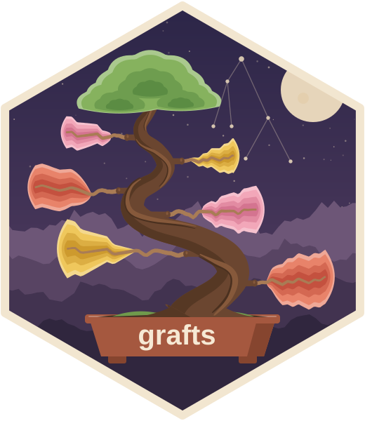

Explore an aggregated tsibble through its series and dimension graphs
Source:R/graph_explore.R
graph_explore.RdServes a browser app for exploring an aggregated tsibble. The left column
holds the series graph, drawn on demand, above the dimension graph of the
key combinations given to fabletools::aggregate_key(). The right column
plots the focused series, with forecasts when a fable is given, above a view
of its children or of the pinned series.
Usage
graph_explore(
data,
value = NULL,
forecasts = NULL,
level = c(80, 95),
max_points = 1000,
port = httpuv::randomPort(),
host = "127.0.0.1",
launch = interactive(),
block = !interactive()
)Arguments
- data
An aggregated tsibble, as produced by
fabletools::aggregate_key().- value
The measured variable shown first. Every numeric measured variable can be chosen in the app. Defaults to the first.
- forecasts
A fable of forecasts for
data, with the same keys (and optionally.model). Its response variable must be a measured variable ofdata. Each model's mean and intervals are drawn after the data.- level
Interval levels drawn for
forecasts.- max_points
Series more than twice this long are sent as the minimum and maximum of blocks of time, about
max_pointsvalues, so spikes stay visible. The season and stacked plots always get the full series.- port, host
Where the app is served.
- launch
Open the app in a browser.
- block
Block the R session while serving. When
FALSE, stop the app withplumber2::api_stop()on the returned api.
Examples
if (interactive()) {
library(fable)
tourism_agg <- aggregate_key(
tsibble::tourism, Purpose * (State / Region), Trips = sum(Trips)
)
# The structure is inferred from the keys: Purpose * (State / Region)
app <- graph_explore(tourism_agg)
plumber2::api_stop(app)
# With forecasts, drawn after the data with their intervals
tourism_fit <- model(tourism_agg, ets = ETS(Trips), snaive = SNAIVE(Trips))
tourism_fc <- forecast(tourism_fit, h = "2 years")
app <- graph_explore(tourism_agg, forecasts = tourism_fc)
plumber2::api_stop(app)
}